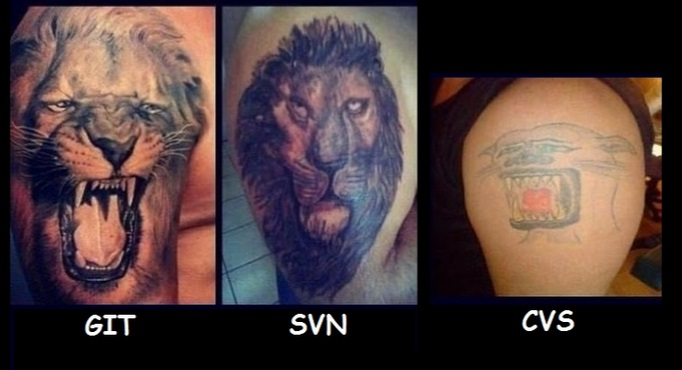

Control de versiones
en la empresa
Javier Martínez
19 de marzo 2015
Javier Martínez
19 de marzo 2015



Bifurcación
En el desarrollo de software vamos a necesitar ramificar funcionalidades

Control de flujo
Revisión de código